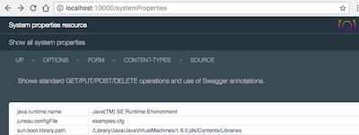
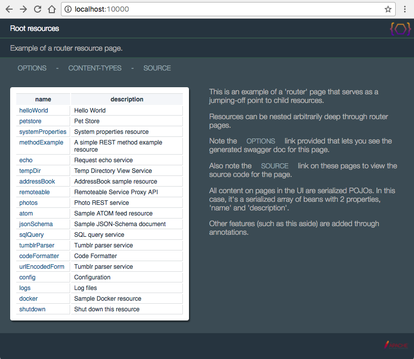
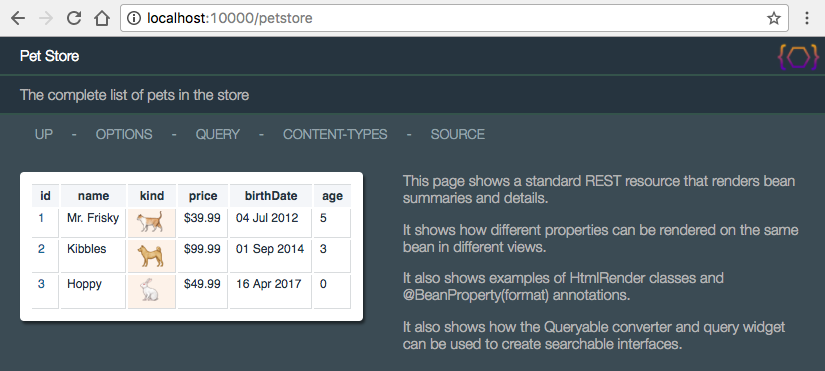
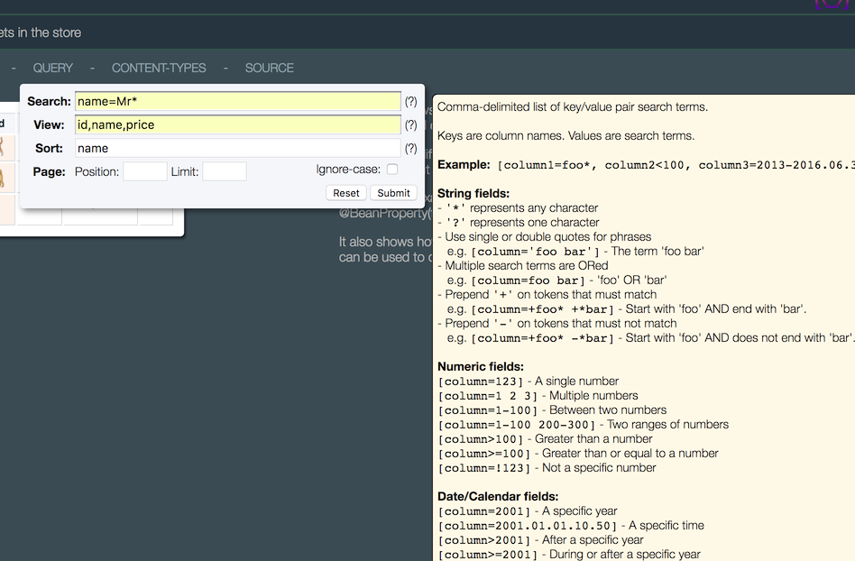
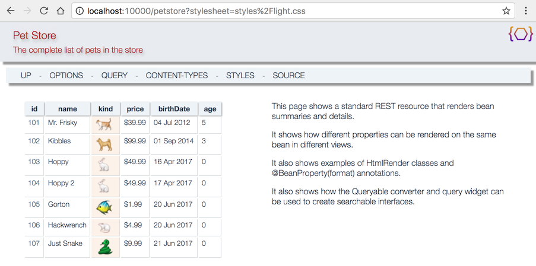

<dependency>
<groupId>org.apache.juneau</groupId>
<artifactId>juneau-rest-server</artifactId>
<version>7.0.1</version>
</dependency>
juneau-rest-server-7.0.1.jar
org.apache.juneau.rest.server_7.0.1.jar
The REST server API builds upon the SerializerGroup and ParserGroup classes
to provide annotated REST servlets that automatically negotiate the HTTP media types for you.
Developers simply work with requests, responses, headers, path variables, query parameters, and form data as POJOs.
It allows you to create sophisticated REST interfaces using tiny amounts of code.
The end goal is to provide simple and flexible yet sophisticated REST interfaces that allow POJOs to be automatically represented as
different content types depending on whatever the particular need:
- HTML for viewing POJOs in easy-to-read format in a browser.
- JSON for interacting through Javascript.
- XML for interacting with other applications.
- RDF for interacting with triple stores.
- URL-Encoding for interacting through HTML forms.
- MessagePack for efficiently transmitting large amounts of data.
A simple example that supports all languages:
@RestResource(
path="/systemProperties",
title="System properties resource"
)
public class SystemPropertiesResource extends RestServletDefault {
@RestMethod(name=GET, path="/")
public Map getSystemProperties(@Query("sort") boolean sort) throws Throwable {
if (sort)
return new TreeMap(System.getProperties());
return System.getProperties();
}
@RestMethod(name=GET, path="/{propertyName}")
public String getSystemProperty(@Path String propertyName) throws Throwable {
return System.getProperty(propertyName);
}
@RestMethod(name=PUT, path="/{propertyName}", guards=AdminGuard.class)
public String setSystemProperty(@Path String propertyName, @Body String value) {
System.setProperty(propertyName, value);
return "OK";
}
@RestMethod(name=POST, path="/", guards=AdminGuard.class)
public String setSystemProperties(@Body java.util.Properties newProperties) {
System.setProperties(newProperties);
return "OK";
}
@RestMethod(name=DELETE, path="/{propertyName}", guards=AdminGuard.class)
public String deleteSystemProperty(@Path String propertyName) {
System.clearProperty(propertyName);
return "OK";
}
}
A more sophisticated example of the same resource using various features, including information
for fully populating the Swagger documentation, guards for restricting access to particular
methods, customizing supported content types and serialization options, adding g-zip compression,
and adding customized branding for the HTML views.
@RestResource(
path="/systemProperties",
title="System properties resource",
description="REST interface for performing CRUD operations on system properties.",
messages="nls/SystemPropertiesResource", // Location of localized messages.
// Widget used for content-type pull-down menu.
widgets={
ContentTypeMenuItem.class
},
// Links on the HTML rendition page.
// "request:/..." URIs are relative to the request URI.
// "servlet:/..." URIs are relative to the servlet URI.
htmldoc=@HtmlDoc(
// Custom navigation links.
links={
"up: request:/..",
"options: servlet:/?method=OPTIONS",
"form: servlet:/formPage",
"$W{ContentTypeMenuItem}",
"source: $C{Source/gitHub}/org/apache/juneau/examples/rest/SystemPropertiesResource.java"
},
// Custom page text in aside section.
aside={
"<div style='max-width:800px' class='text'>",
" <p>Shows standard GET/PUT/POST/DELETE operations and use of Swagger annotations.</p>",
"</div>"
},
// Custom CSS styles applied to HTML view.
style={
"aside {display:table-caption;}"
}
),
// Set serializer, parser, and REST context properties.
properties={
@Property(name=SERIALIZER_quoteChar, value="'")
},
// Add compression support.
encoders=GzipEncoder.class,
// Augment generated Swagger information.
swagger=@ResourceSwagger(
contact="{name:'John Smith',email:'john@smith.com'}",
license="{name:'Apache 2.0',url:'http://www.apache.org/licenses/LICENSE-2.0.html'}",
version="2.0",
termsOfService="You're on your own.",
tags="[{name:'Java',description:'Java utility',externalDocs:{description:'Home page',url:'http://juneau.apache.org'}}]",
externalDocs="{description:'Home page',url:'http://juneau.apache.org'}"
)
)
public class SystemPropertiesResource extends RestServlet {
@RestMethod(
name=GET, path="/",
summary="Show all system properties",
description="Returns all system properties defined in the JVM.",
// Augment generated Swagger information.
swagger=@MethodSwagger(
parameters={
@Parameter(in="query", name="sort", description="Sort results alphabetically.", _default="false")
},
responses={
@Response(value=200, description="Returns a map of key/value pairs.")
}
)
)
public Map getSystemProperties(@Query("sort") boolean sort) throws Throwable {
if (sort)
return new TreeMap(System.getProperties());
return System.getProperties();
}
...
}
In HTML, our resource looks like this:

When combined with the support for HTML5 beans, simple HTML forms can be constructed for easy input and output
using nothing more than Java:
import static org.apache.juneau.dto.html5.HtmlBuilder.*;
@RestMethod(
name=GET, path="/formPage",
summary="Form entry page",
description="A form post page for setting a single system property value.",
guards=AdminGuard.class
)
public Form getFormPage() {
return form().method(POST).action("formPagePost").children(
table(
tr(
th("Set system property").colspan(2)
),
tr(
td("Name: "), td(input("text").name("name"))
),
tr(
td("Value: "), td(input("text").name("value"))
)
),
button("submit","Click me!").style("float:right")
);
}
@RestMethod(
name=POST, path="/formPagePost",
description="Accepts a simple form post of a system property name/value pair.",
guards=AdminGuard.class
)
public Redirect formPagePost(@FormData("name") String name, @FormData("value") String value) {
System.setProperty(name, value);
return new Redirect("servlet:/"); // Redirect to the servlet top page.
}

The REST API is built on top of Servlets, making them easy to deploy in any JEE environment.
REST Java methods can return any of the following objects:
POJOs, Readers, InputStreams, ZipFiles, Redirects, Streamables, and Writables.
Or add your own handlers for other types.
REST Java methods can be passed any of the following objects in any order:
- Low-level request/response objects:
HttpServletRequest, HttpServletResponse, RestRequest, RestResponse.
- Intermediate-level objects:
RequestHeaders, RequestQuery, RequestFormData, RequestPathMatch, RequestBody.
- All RFC 2616 request header objects:
Accept, AcceptLanguage, AcceptEncoding...
- Annotated parameters:
@Header, @Query, @FormData, @Path, @PathRemainder, @Body.
- Other objects:
Locale, ResourceBundle, MessageBundle, InputStream, OutputStream, Reader, Writer...
- User-defined parameter types.
It's up to you how you want to define your REST methods.
As a general rule, there are 3 broad approaches typically used:
Methodology #1 - Annotated parameters
This approach uses annotated parameters for retrieving input from the request.
@RestMethod(name=GET, path="/example1/{p1}/{p2}/{p3}/*")
public String example1(
@Method String method, // HTTP method.
@Path String p1, // Path variables.
@Path int p2,
@Path UUID p3,
@Query("q1") int q1, // Query parameters.
@Query("q2") String q2,
@Query("q3") UUID q3,
@PathRemainder String remainder, // Path remainder after pattern match.
@Header("Accept-Language") String lang, // Headers.
@Header("Accept") String accept,
@Header("DNT") int doNotTrack
) {
// Send back a simple String response
String output = String.format(
"method=%s, p1=%s, p2=%d, p3=%s, remainder=%s, q1=%d, q2=%s, q3=%s, lang=%s, accept=%s, dnt=%d",
method, p1, p2, p3, remainder, q1, q2, q3, lang, accept, doNotTrack);
return output;
}
Methodology #2 - Low-level request/response objects
This approach uses low-level request/response objects to perform the same as above.
@RestMethod(name=GET, path="/example2/{p1}/{p2}/{p3}/*")
public String example2(
RestRequest req, // A direct subclass of HttpServletRequest.
RestResponse res // A direct subclass of HttpServletResponse.
) {
// HTTP method.
String method = req.getMethod();
// Path variables.
RequestPathMatch path = req.getPathMatch();
String p1 = path.get("p1", String.class);
int p2 = path.get("p2", int.class);
UUID p3 = path.get("p3", UUID.class);
// Query parameters.
RequestQuery query = req.getQuery();
int q1 = query.get("q1", 0, int.class);
String q2 = query.get("q2", String.class);
UUID q3 = query.get("q3", UUID.class);
// Path remainder after pattern match.
String remainder = req.getPathMatch().getRemainder();
// Headers.
String lang = req.getHeader("Accept-Language");
String accept = req.getHeader("Accept");
int doNotTrack = req.getHeaders().get("DNT", int.class);
// Send back a simple String response
String output = String.format(
"method=%s, p1=%s, p2=%d, p3=%s, remainder=%s, q1=%d, q2=%s, q3=%s, lang=%s, accept=%s, dnt=%d",
method, p1, p2, p3, remainder, q1, q2, q3, lang, accept, doNotTrack);
res.setOutput(output); // Or use getWriter().
}
Methodology #3 - Intermediate-level API objects
This approach is sort of the middle ground where you get access functional area APIs.
@RestMethod(name=GET, path="/example3/{p1}/{p2}/{p3}/*")
public String example3(
HttpMethod method, // HTTP method.
RequestPathMatch path, // Path variables.
RequestQuery query, // Query parameters.
RequestHeaders headers, // Headers.
AcceptLanguage lang, // Specific header classes.
Accept accept
) {
// Path variables.
String p1 = path.get("p1", String.class);
int p2 = path.get("p2", int.class);
UUID p3 = path.get("p3", UUID.class);
// Query parameters.
int q1 = query.get("q1", 0, int.class);
String q2 = query.get("q2", String.class);
UUID q3 = query.get("q3", UUID.class);
// Path remainder after pattern match.
String remainder = path.getRemainder();
// Headers.
int doNotTrack = headers.get("DNT", int.class);
// Send back a simple String response
String output = String.format(
"method=%s, p1=%s, p2=%d, p3=%s, remainder=%s, q1=%d, q2=%s, q3=%s, lang=%s, accept=%s, dnt=%d",
method, p1, p2, p3, remainder, q1, q2, q3, lang, accept, doNotTrack);
res.setOutput(output);
}
All three are completely equivalent. It's up to your own coding preferences which methodology you use.
Lifecycle hooks allow you to hook into lifecycle events of the servlet or REST call.
Like @RestMethod methods, the list of parameters are specified by the developer.
For example, if you want to add an initialization method to your resource:
@RestResource(...)
public class MyResource {
// Our database.
private Map<Integer,Object> myDatabase;
@RestHook(INIT)
public void initMyDatabase(RestConfig config) throws Exception {
myDatabase = new LinkedHashMap<>();
}
}
Or if you want to intercept REST calls:
@RestResource(...)
public class MyResource {
// Add a request attribute to all incoming requests.
@RestHook(PRE_CALL)
public void onPreCall(RestRequest req) {
req.setAttribute("foo", "bar");
}
}
The hook events can be broken down into two categories:
- Resource lifecycle events:
- INIT - Right before initialization.
- POST_INIT - Right after initialization.
- POST_INIT_CHILD_FIRST - Right after initialization, but run child methods first.
- DESTROY - Right before servlet destroy.
- REST call lifecycle events:
- START_CALL - At the beginning of a REST call.
- PRE_CALL - Right before the @RestMethod method is invoked.
- POST_CALL - Right after the @RestMethod method is invoked.
- END_CALL - At the end of the REST call after the response has been flushed.
Auto-generated OPTIONS pages are constructed from Swagger DTO beans, here shown serialized as HTML:

Swagger documentation can be populated from annotations (as above), resource bundles, or Swagger JSON files.
The page shown above is implemented on the RestServletDefault class in the method below which shows that it's doing nothing more than
serializing a Swagger bean which is constructed in the RestRequest object:
@RestMethod(name=OPTIONS, path="/*")
public Swagger getOptions(RestRequest req) {
return req.getSwagger();
}
Navigable hierarchies of REST resources are easy to set up either programmatically or through annotations.
The following example is the RootResources class from the REST examples showing how to construct
a grouping of resources using the children() annotation:
@RestResource(
path="/",
title="Root resources",
description="Example of a router resource page.",
widgets={
PoweredByApache.class,
ContentTypeMenuItem.class
},
htmldoc=@HtmlDoc(
links={
"options: ?method=OPTIONS",
"$W{ContentTypeMenuItem}",
"source: $C{Source/gitHub}/org/apache/juneau/examples/rest/RootResources.java"
},
aside={
"<div style='max-width:400px' class='text'>",
" <p>This is an example of a 'router' page that serves as a jumping-off point to child resources.</p>",
" <p>Resources can be nested arbitrarily deep through router pages.</p>",
" <p>Note the options link provided that lets you see the generated swagger doc for this page.</p>",
" <p>Also note the source link on these pages to view the source code for the page.</p>",
" <p>All content on pages in the UI are serialized POJOs. In this case, it's a serialized array of beans with 2 properties, 'name' and 'description'.</p>",
" <p>Other features (such as this aside) are added through annotations.</p>",
"</div>"
},
footer="$W{PoweredByApache}"
),
children={
HelloWorldResource.class,
PetStoreResource.class,
SystemPropertiesResource.class,
MethodExampleResource.class,
RequestEchoResource.class,
TempDirResource.class,
AddressBookResource.class,
SampleRemoteableServlet.class,
PhotosResource.class,
AtomFeedResource.class,
JsonSchemaResource.class,
SqlQueryResource.class,
TumblrParserResource.class,
CodeFormatterResource.class,
UrlEncodedFormResource.class,
ConfigResource.class,
LogsResource.class,
DockerRegistryResource.class,
ShutdownResource.class
}
)
public class RootResources extends RestServletGroupDefault { /* No code needed! */ }
The above resource when rendered in HTML shows how easy it is to discover and navigate to child resources using a browser:

Resources can be nested arbitrarily deep.
The @RestResource and @RestMethod annotations can be applied to any classes, not just
servlets. The only requirement is that the top-level resource be a subclass of RestServlet as a hook into
the servlet container.
The juneau-examples-rest project includes various other examples that highlight some of the
capabilities of the REST servlet API.
For example, the PetStoreResource class shows some advanced features such as using POJO renders
and converters, and HTML widgets.

The beans being serialized are shown here:
// Our bean class.
public class Pet {
@Html(link="servlet:/{id}") // Creates a hyperlink in HTML view.
@NameProperty // Links the parent key to this bean.
public int id;
public String name;
public Kind kind;
@BeanProperty(format="$%.2f") // Renders price in dollars.
public float price;
@BeanProperty(swap=DateSwap.RFC2822D.class) // Renders dates in RFC2822 format.
public Date birthDate;
public int getAge() {
Calendar c = new GregorianCalendar();
c.setTime(birthDate);
return new GregorianCalendar().get(Calendar.YEAR) - c.get(Calendar.YEAR);
}
}
@Html(render=KindRender.class) // Render as an icon in HTML.
public static enum Kind {
CAT, DOG, BIRD, FISH, MOUSE, RABBIT, SNAKE
}
public static class KindRender extends HtmlRender<Kind> {
@Override
public Object getContent(SerializerSession session, Kind value) {
return new Img().src("servlet:/htdocs/"+value.toString().toLowerCase()+".png");
}
@Override
public String getStyle(SerializerSession session, Kind value) {
return "background-color:#FDF2E9";
}
}
The QUERY menu item shows the capabilities of Converters which are post-processors that
work to filter POJOs after they've been returned by your Java method.
In this case, we're using the Queryable converter that allows us to perform search/view/sort/paging
against collections of beans:

The drop-down menu items are implemented through "widgets" which allow you to embed arbitrary HTML, Javascript,
and CSS in the HTML view of the page.
@RestMethod(
name=GET,
path="/",
summary="The complete list of pets in the store",
// Add 'query' and 'content-types' menu items.
widgets={
QueryMenuItem.class,
ContentTypeMenuItem.class,
StyleMenuItem.class
},
// Add our converter for POJO query support.
converters=Queryable.class,
// Add our menu items in the nav links.
htmldoc=@HtmlDoc(
links={
"up: request:/..",
"options: servlet:/?method=OPTIONS",
"$W{QueryMenuItem}",
"$W{ContentTypeMenuItem}",
"$W{StyleMenuItem}",
"source: $C{Source/gitHub}/org/apache/juneau/examples/rest/PetStoreResource.java"
}
)
)
public Collection<Pet> getPets() {
HTML views are highly customizable with abilities such as defining your own look-and-feel and even allowing
you to define your own templates.
For example, the PetStore page above rendered in one of the other predefined stylesheets:

Automatic error handling is provided for a variety of conditions:
- Automatic 401 errors (Unauthorized) on failed guards.
- Automatic 404 errors (Not Found) on unmatched path patterns.
- Automatic 405 errors (Method Not Implemented) on unimplemented methods.
- Automatic 406 errors (Not Acceptable) when no matching serializer was found to handle the Accept header.
- Automatic 412 errors (Precondition Failed) when all matchers failed to match.
- Automatic 415 errors (Unsupported Media Type) when no matching parser was found was found to handle the Content-Type header.
- Automatic 500 errors on uncaught exceptions.
- Throw your own runtime RestException with HTTP status and response object.
Other features include:
- Extremely simple debuggability using nothing more than your browser.
- Simplified localization support.
- Configurability through external INI files.
- Client-versioned responses (and other customizable heuristic matching APIs).
- Define and use your own HTML stylesheets.
- Lots of up-to-date documentation and examples.
- MUCH MORE!....
User Interfaces (UI) vs. Developer Interfaces (DI)
An important distinction needs to be made about the HTML representations produced by the REST
API. These should not be considered User Interfaces, but rather Developer Interfaces.
UIs should hide the end-user from the underlying architecture.
The audience generally consists of non-technical people not interested in how the UI works.
DIs, on the other hand, should NOT hide the end-user from the underlying architecture.
Instead, it's a thin veneer over the REST interface with the following goals:
- Make it easy for the developer to explore and understand the REST API.
- Make it easy for the developer to debug the REST API using simple tools (hopefully just a browser).
As a result, the following guidelines are recommended:
-
Use titles/descriptions/asides to describe why the REST interface exists.
A developer knowing little about it should be able to access it with a browser and quickly
understand what it is and how to use it.
-
Don't hide the raw data!
The HTML view should simply be considered an easier-to-read representation of the data normally
rendered in JSON or some other format.
-
Limit your use of Javascript!
You can use it sparingly if you want to implement something simple like a pull-down menu to
simplify some debug task, but remember that your audience cares more about interacting with your
service programmatically using REST.
Remember that the HTML is just icing on the cake.
-
Don't use it to implement a Web 2.0 interface!
If you want a Web 2.0 UI, implement it separately ON TOP OF this REST interface.
The architecture is flexible enough that you could in theory pull in and use jQuery, React,
Angular, or any number of sophisticated Javascript UI frameworks. Resist the urge to do so.